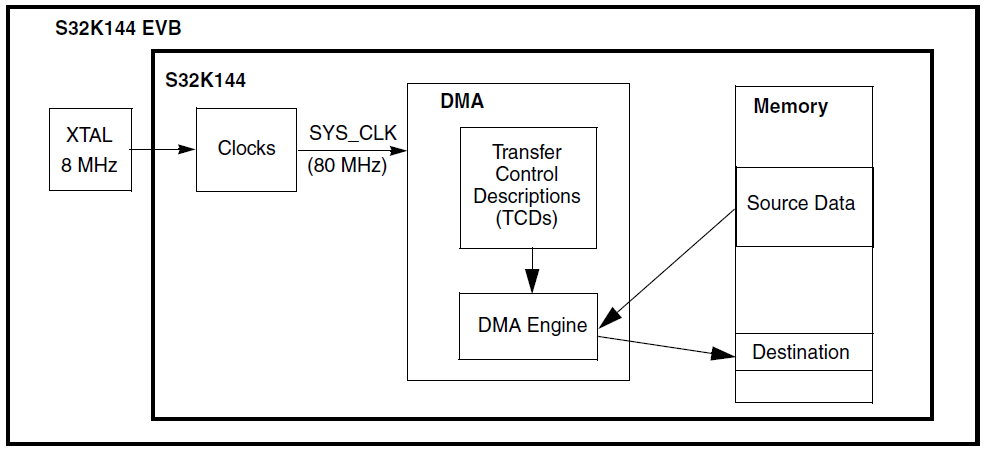
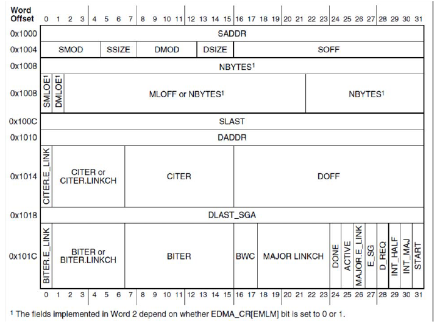

Description
Summary: Initialize an eDMA channel’s Transfer Control Descriptor (TCD) to transfer a string of bytes (“Hello world”) from an array in SRAM to a single SRAM byte location.
This emulates a common use of DMA, where a string of data or commands is transferred automatically under DMA control to an input register of a peripheral.
The intent of this example is to illustrate how to set up a DMA transfer.

The DMA MUX is required when using DMA with peripherals.
Peripheral assignment numbers for mapping to a DMA channel are listed in the reference manual’s attached spreadsheet S32K1xx_DMA_Interrupt_mapping, DMA_CH_MUX tab.
For a software triggered transfer as in this example, DMA MUX is not required.
Interrupts, not used in this tutorial level example, are useful when all the desired transfers or half of them are complete.
One use case is to have a peripheral like ADC generate a DMA request after a conversion completes. The DMA controller can automatically transfer the conversion result to SRAM.
After a desired number of conversions, the DMA controller can generate an interrupt request for that channel.
Channel linking and scatter-gather (SGA) are advanced features that enable a DMA request to allow multiple different transfers on each DMA request, and/or to use a different TCD for each DMA request.
These powerful features can be used with peripheral(s) to implement a state machine type sub-system.
Example: An input signal generates a DMA request which transfers data to initialize multiple peripherals.
Minor loop mapping is normally not used in MCU level applications, but can be powerful for graphics to rotate images in increments of 45 degrees.
Because a peripheral is not involved in this example, automatic DMA handshaking will not occur.
Instead, the software handshaking given here must be implemented for each DMA request (minor loop transfer):
- Start DMA service request (set a START bit for desired channel).
- Wait for the minor loop transfer to complete by polling for START and ACTIVE status.
- Repeat above two steps until major loop is complete as indicated by DONE bit.
These steps appear “messy” for every transfer, which is only a byte in this example. However, when using actual peripherals, software never has to do these steps; they are done automatically by hardware.
The START bit is normally set with hardware by the peripheral requesting service. Once the DMA processing engine activates the channel, the ACTIVE bit is set.
If the DMA engine was busy servicing other channels, one could cancel the transfer by clearing the START bit.
The ACTIVE bit would then need to be checked to ensure service did not start on that channel.
As an exercise, the TCD can be modified so the destination is an array instead of a single byte location.
(Hint: declare the destination as a string and change DOFF=1.)
Design
TCDs describe the data to be transferred and how the transfer is controlled. Each TCD occupies eight
32-bit words in a RAM internal to the eDMA structure as summarized in the following figure and table.

Disable watchdog
- System clocks: Initialize SOSC for 8 MHz, sysclk 80 MHz, RUN mode for 80 MHz
- Initialize DMA controller:
- Enable clock to DMA MUX module (Not required if software initiates DMA with START bit.)
- Enable desired channels. (Not required if software initiates DMA with START bit.)
- Initialize DMA Transfer Control Descriptors (Only TCD0 is used here):
- Source
- Source address (SADDR): Use address of a string “Hello World”
- Source offset (SOFF): Increment source address by 1 byte for each transfer
- Source modulo (SMOD): Feature not used here
- Source size (SSIZE): Read 1 byte at a time
- Source last address adjustment (SLAST): Decrement source address by 11 after major loop
- Destination
- Destination address (DADDR): Use address of a single byte
- Destination offset (DOFF): Do not add offset to destination address after minor loop
- Destination modulo (DMOD): Feature not used here
- Destination size (DSIZE): Write 1 byte at a time
- Destination last address adjustment (DLAST): Do not adjust address after major loop
- Number of bytes per DMA request and number of iterations (minor loops)
- Number of bytes to be transferred per DMA request (NBYTES): One byte
- Number of iterations/minor loops in major loop (CITER and BITER): 11
- Channel to channel linking for additional iterations after minor loop (BITER ELINK and CITER ELINK): Disabled
- Controls and Status
- Disable channel after major loop completes (DREQ): Disable channel
- Generate interrupt request half way through major loop (INTHALF): Disabled
- Generate interrupt request after completing major loop (INTMAJOR): Disabled
- Enable Scatter-Gather (ESG): Disabled. No other TCDs loaded to channel
- Enable channel link after major loop (MAJORLINK): Disabled
- Channel link number after major loop (MAJORLINKCH): Null - feature disabled
- Band Width Control (BWC): Set to 0 so there are no stalls after R/W
- Clear initial values of status flags (START, ACTIVE, DONE): Set to zero
- Start first transfer (set START = 1) and wait for transfer to complete (START=0, ACTIVE=0)
- Loop: While the channel’s DONE status is not set:
- Start next transfer (set START = 1) and wait for transfer to complete (START=0, ACTIVE=0)
- Clear channel’s DONE status bit
Driver Functions:
main.c
#include "device_registers.h"
void WDOG_disable (void)
{
WDOG->CNT=0xD928C520;
WDOG->TOVAL=0x0000FFFF;
WDOG->CS = 0x00002100;
}
int main(void)
{
WDOG_disable();
DMA->SSRT = 0;
while (((DMA->TCD[0].CSR >> DMA_TCD_CSR_START_SHIFT) & 1) |
((DMA->TCD[0].CSR >> DMA_TCD_CSR_ACTIVE_SHIFT) & 1)) {}
while (!((DMA->TCD[0].CSR >> DMA_TCD_CSR_DONE_SHIFT) & 1) ) {
DMA->SSRT = 0;
while (((DMA->TCD[0].CSR >> DMA_TCD_CSR_START_SHIFT) & 1) |
((DMA->TCD[0].CSR >> DMA_TCD_CSR_ACTIVE_SHIFT) & 1)) {}
}
DMA->TCD[0].CSR &= ~(DMA_TCD_CSR_DONE_MASK);
while (1) {}
}
 1.8.14
1.8.14